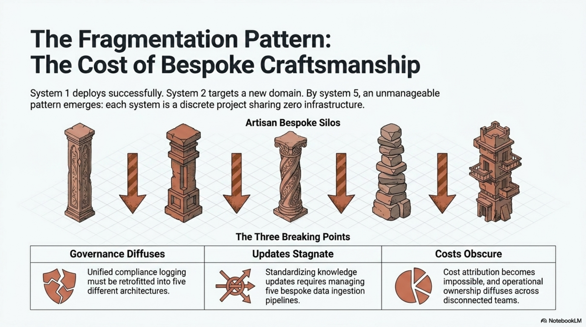
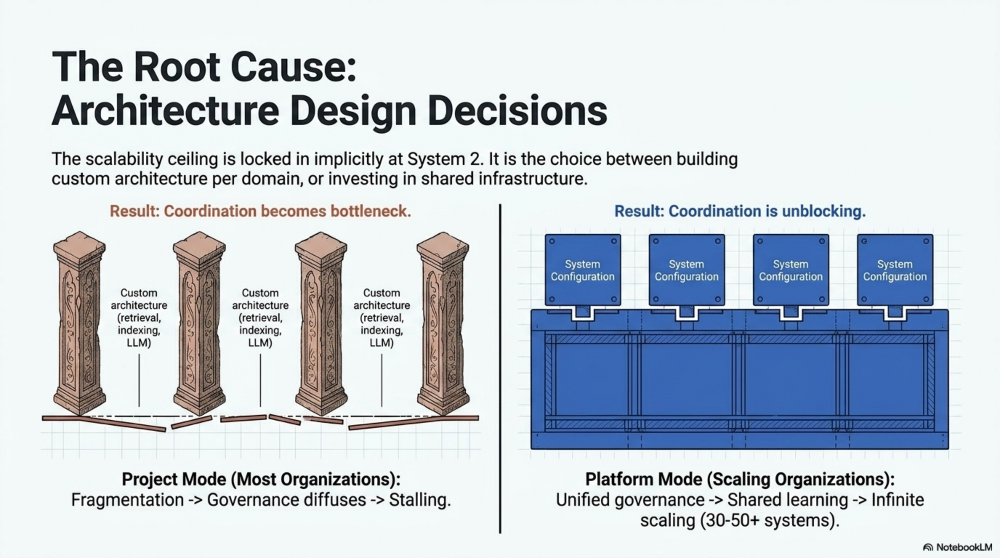
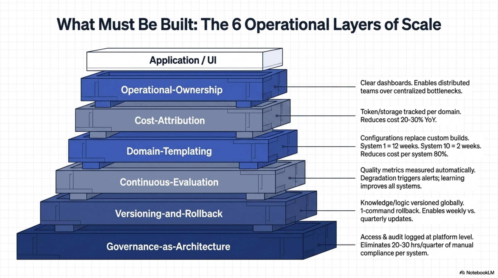
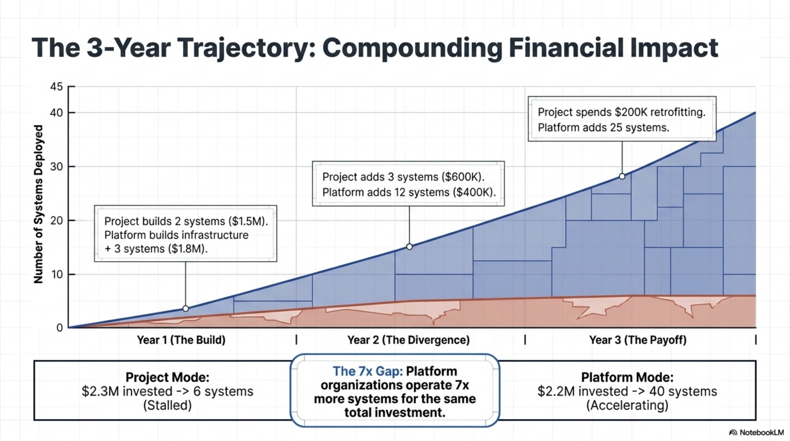

Industrializing AI Product Creation: From Idea to Scale
Every large organization has more AI ideas than it can execute. Federal agencies identify use cases for conversational knowledge access, fraud detection, document intelligence, and case management. Healthcare systems see opportunities in patient risk prediction. Financial services recognize value in fraud scoring and regulatory compliance automation.
Yet most of these ideas never ship. Organizations that do deploy AI products consistently hit the same ceiling: between 5 and 8 independent systems. After that, each subsequent product takes longer, costs more, and carries higher risk. By the time they attempt their 6th or 7th system, coordination overhead becomes the primary constraint—not engineering capacity, not model quality, but pure coordination overhead.
This pattern is consistent enough across federal agencies, healthcare systems, and financial services that it looks like a law of organizational physics. It is not a technology problem. It is an architectural one.
Enterprise AI Foundry solves this. It is not a product. It is a repeatable framework, infrastructure system, and operating model that eliminates the "6-system ceiling" by providing six operational layers that every AI product inherits automatically. With the Foundry, the first product takes 12 weeks from idea to MVP. The second takes 2-3 weeks. The tenth takes 2-3 weeks. Organizations scale to 20, 50, or 100+ systems using the same infrastructure.
The journey from "we should build this" to "this is generating business value" is far longer than expected: 18-24 months typically. But not because of engineering. Engineering is 6-8 weeks. The other 16+ months goes to governance alignment, compliance validation, cost estimation, risk assessment, pilot programs, organizational buy-in, and operational handoff.
Organizations with multiple AI systems report a consistent pattern. The first system takes 18 months. Organizations assume the second will be faster. It is not. The second takes 16 months. By system 5-8, timelines are extending again as coordination overhead explodes.
Each system requires its own governance review. Each system develops its own versioning approach. Each system designs custom evaluation metrics. Each system tracks costs independently. Each system has diffuse ownership.
By the time the organization realizes these should be unified, they have already made independent decisions four times over. Retrofitting unified infrastructure creates rework. Teams are frustrated. Momentum stalls.

Enterprise AI Foundry provides six operational layers built once and inherited by all products automatically. Rather than each system solving governance, versioning, evaluation, cost tracking, templating, and ownership independently, all systems inherit these capabilities.
These layers are:
1. Governance-as-Architecture — Compliance, security, audit rules defined once, inherited by all systems.
2. Versioning-and-Rollback — Knowledge, models, logic tracked at platform level. Updates tested, deployed safely, rollback automatic.
3. Continuous-Evaluation — Quality metrics measured automatically. Degradation detected before users notice.
4. Domain-Templating — New domains use configuration templates instead of custom engineering.
5. Cost-Attribution — Costs tracked per domain. Teams see what they spend and why.
6. Operational-Ownership — Each product has clear ownership with accountability dashboards.
The decision made around systems 2-3 determines the organization's scalability ceiling. This choice is usually implicit but it locks in a fundamental constraint.
Each team owns their system end-to-end. Infrastructure decisions vary by domain. No shared governance, versioning, or evaluation infrastructure.
Result: Ceiling at 6-8 systems. Retrofitting becomes the primary constraint.
One platform team owns unified infrastructure. Domain teams own use cases and data. All systems inherit governance, versioning, evaluation, cost tracking from platform.
Result: Ceiling moves to 50-60+ systems. New systems deploy in 2-3 weeks.

These layers are built into the Foundry. Every product inherits them automatically. Organizations don't rebuild them per product. This is what transforms execution risk from a constraint to a managed variable.

Compliance, security, audit, and access control rules are defined once at the Foundry level. All products inherit automatically. When regulatory requirements change, the update happens centrally. All systems automatically comply.
In Project Mode, each system has custom compliance implementation. A new regulation requires updates to every system manually. In Foundry Mode, one change propagates to all systems.
Knowledge, retrieval logic, and model versions are tracked at the platform level. Updates are tested in staging, deployed safely, and rollback is automatic. This enables weekly knowledge updates instead of quarterly.
In Project Mode, teams are afraid to update (risk is high). In Foundry Mode, updates are safe and reversible. Teams optimize continuously.
Quality metrics (accuracy, hallucination, latency, cost) are measured automatically across all systems. Degradation triggers alerts before users notice. When one system discovers a better approach, it benefits all systems.
In Project Mode, quality is discovered by users complaining. In Foundry Mode, quality issues are caught automatically.
New domains use configuration templates instead of custom engineering builds. Product 1 takes 12 weeks. Product 2 takes 2-3 weeks. Product 10 takes 2-3 weeks.
This acceleration comes from reusing proven patterns rather than re-solving solved problems.
Costs are tracked per domain: tokens, embeddings, storage, compute. Teams see what they spend and why. Optimization is data-driven, not guesswork.
In Project Mode, only aggregate costs are visible. In Foundry Mode, per-product costs drive optimization.
Each product has clear ownership with dashboards. Owners are accountable for quality, cost, and adoption. Distributed ownership scales to 50+ products without centralized bottleneck.
Every AI product takes the same journey. The Foundry provides infrastructure for each stage:
Idea Stage: Governance-as-Architecture and Cost-Attribution surface compliance implications and cost estimates before engineering begins.
Validation Stage: Rapid POC (4-6 weeks, not 3-4 months). Continuous-Evaluation measures business value with data, not impression.
Prototype Stage: Domain-Templating accelerates engineering. Versioning enables safe experimentation. Continuous-Evaluation guides decisions.
MVP Stage: All six layers active. Production-ready infrastructure from day 1. Governance, versioning, evaluation, cost tracking, ownership all in place.
Production Stage: Scales reliably with all operational infrastructure. Weekly updates. Automatic quality monitoring. Per-product cost optimization.
Scale Stage: Product 1's template enables Product 2 in 2-3 weeks. Shared learning compounds across all products. Organizational scaling becomes possible.
The competitive advantage of platform thinking emerges over time as compounding effects accumulate.

Project Mode: Systems 1-2 deployed, $2.1M invested. Platform Mode: Platform built + Systems 1-3 deployed, $1.8M invested.
Project Mode: Systems 3-5 deployed, coordination overhead emerges. Platform Mode: Systems 4-15 deployed, coordination accelerates progress.
Project Mode: 6 systems, $2.3M total, stalled. Platform Mode: 40+ systems, $2.2M total, accelerating.
The Gap: Platform organization operates 7x more systems for equivalent investment. By year three, this becomes a non-recoverable competitive advantage.
Conversational knowledge access for organizational employees. Currently in MVP → Production stage. Processing 1,000+ queries per week. 92% accuracy. 8.2/10 user satisfaction. $32K/month cost.
The Foundry's Governance-as-Architecture layer means automatic compliance (no custom engineering). Continuous-Evaluation tracks quality automatically. Versioning-and-Rollback enables weekly knowledge updates. Cost-Attribution shows per-agency costs. Operational-Ownership creates clear accountability.
The Ask-AI template now enables deployment to other departments in 2-3 weeks instead of 18+ months of custom engineering.
Unified fraud scoring across channels. Currently in Validation → Prototype stage. POC shows 15% fraud reduction. Cost estimation: $12K/month at scale.
Governance-as-Architecture surfaced compliance requirements early (not later). Continuous-Evaluation measures fraud detection impact with data. Domain-Templating provides patterns for statistical models.
By Q3, MVP deployment. By Q4, production. Template will enable other channels to deploy in 2-3 weeks.
AI-assisted case classification and routing. Currently in Idea → Validation stage. Problem: 4-hour manual classification per case.
Governance-as-Architecture identified compliance requirements early (sensitive case data). Cost-Attribution estimated costs. If validation succeeds, prototype will use templates. Full deployment in 12 weeks (not 18+ months).
Enterprise AI Foundry is the infrastructure that transforms AI product creation from an episodic, high-risk, slow process into a repeatable, observable, scalable process.
Organizations in Project Mode stall after 5-8 products. Coordination overhead becomes the primary constraint. By the time they recognize that infrastructure should be unified, they have already made independent decisions four times over.
Organizations with Enterprise AI Foundry move from stalling at 5-8 systems to scaling to 20, 50, or 100+ systems. The first product takes 12 weeks. Subsequent products take 2-3 weeks. The difference is not talent or model quality. The difference is infrastructure.
For organizations planning to deploy 5+ AI products, building the Foundry is not optional. It is the difference between success and stalling.